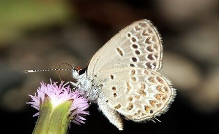

台灣玄灰蝶
臺灣玄灰蝶（學名:Tongeia hainani），又名海南玄灰蝶、臺灣黑燕小灰蝶、臺灣黑燕蝶、景天密點玄灰蝶，為灰蝶科玄灰蝶屬下的一個種。 本種為台灣特有種，分布於台灣本島中、低海拔地區常綠闊葉林、海岸林，族群依靠寄主植物群落而生。 本種幼蟲以景天科植物為食，如倒吊蓮、鵝鑾鼻燈籠草、銳葉掌上珠、落地生根等，一年多世代，成蟲全年可見。



展翅24~28mm，翅膀表面黑褐色，下翅具短尾突，翅腹面灰白色具橙褐色的斑點，斑點的位置與沖繩小灰蝶近似。 本種因季節有兩型，夏季型黑斑較鮮明，冬型斑紋呈淡褐色，外觀近似霧社黑燕蝶但本種前翅腹面近基部處少了2枚一大一小的黑斑，與霧社黑燕蝶有別。